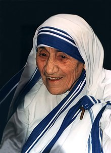

Mother Teresa

"Little things are indeed little, but to be faithful in little things is a great thing."
- Nun and missionary Mother Teresa, known in the Catholic church as Saint Teresa of Calcutta, devoted her life to caring for the sick and poor. Born in Macedonia to parents of Albanian-descent and having taught in India for 17 years, Mother Teresa experienced her "call within a call" in 1946. Her order established a hospice; centers for the blind, aged and disabled; and a leper colony.
- Mother Teresa was born on August 26, 1910, in Skopje, the current capital of the Republic of Macedonia. The following day, she was baptized as Agnes Gonxha Bojaxhiu.
- Agnes attended a convent-run primary school and then a state-run secondary school. As a girl, she sang in the local Sacred Heart choir and was often asked to sing solos. The congregation made an annual pilgrimage to the Church of the Black Madonna in Letnice, and it was on one such trip at the age of 12 that she first felt a calling to religious life. Six years later, in 1928, an 18-year-old Agnes Bojaxhiu decided to become a nun and set off for Ireland to join the Sisters of Loreto in Dublin. It was there that she took the name Sister Mary Teresa after Saint Thérèse of Lisieux.
- She arrived in India in 1929 and began her novitiate in Darjeeling, in the lower Himalayas, where she learned Bengali and taught at St. Teresa's School near her convent. She took her first religious vows on 24 May 1931. She chose to be named after Thérèse de Lisieux, the patron saint of missionaries; because a nun in the convent had already chosen that name, she opted for its Spanish spelling of Teresa.
- Teresa took her solemn vows on 14 May 1937 while she was a teacher at the Loreto convent school in Entally, eastern Calcutta, taking the style of 'Mother' as part of Loreto custom. She served there for nearly twenty years and was appointed its headmistress in 1944. Although Mother Teresa enjoyed teaching at the school, she was increasingly disturbed by the poverty surrounding her in Calcutta. The Bengal famine of 1943 brought misery and death to the city, and the August 1946 Direct Action Day began a period of Muslim-Hindu violence.
- She began missionary work with the poor in 1948, replacing her traditional Loreto habit with a simple, white cotton sari with a blue border. Mother Teresa adopted Indian citizenship, spent several months in Patna to receive basic medical training at Holy Family Hospital and ventured into the slums. She founded a school in Motijhil, Calcutta, before she began tending to the poor and hungry. At the beginning of 1949, Mother Teresa was joined in her effort by a group of young women, and she laid the foundation for a new religious community helping the "poorest among the poor".
- In 1952, Mother Teresa opened her first hospice with help from Calcutta officials. She converted an abandoned Hindu temple into the Kalighat Home for the Dying, free for the poor, and renamed it Kalighat, the Home of the Pure Heart (Nirmal Hriday). Those brought to the home received medical attention and the opportunity to die with dignity in accordance with their faith: Muslims were read the Quran, Hindus received water from the Ganges, and Catholics received extreme unction. "A beautiful death", Mother Teresa said, "is for people who lived like animals to die like angels—loved and wanted."
- In 1979, Mother Teresa received the Nobel Peace Prize "for work undertaken in the struggle to overcome poverty and distress, which also constitutes a threat to peace". She refused the conventional ceremonial banquet for laureates, asking that its $192,000 cost be given to the poor in India and saying that earthly rewards were important only if they helped her to help the world's needy. When Mother Teresa received the prize she was asked, "What can we do to promote world peace?" She answered, "Go home and love your family." Building on this theme in her Nobel lecture, she said: "Around the world, not only in the poor countries, but I found the poverty of the West so much more difficult to remove. When I pick up a person from the street, hungry, I give him a plate of rice, a piece of bread, I have satisfied. I have removed that hunger. But a person that is shut out, that feels unwanted, unloved, terrified, the person that has been thrown out from society – that poverty is so hurtable [sic] and so much, and I find that very difficult."
- After several years of deteriorating health, including heart, lung and kidney problems, Mother Teresa died on September 5, 1997, at the age of 87.